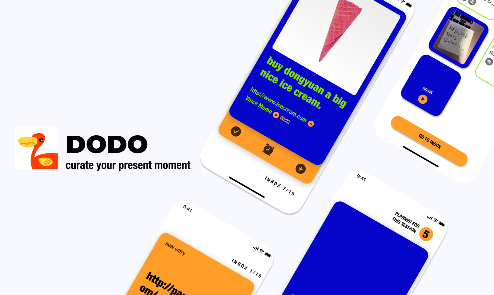
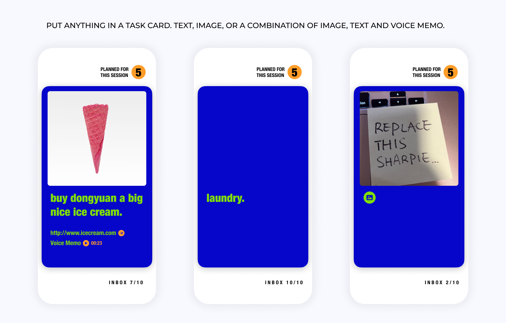
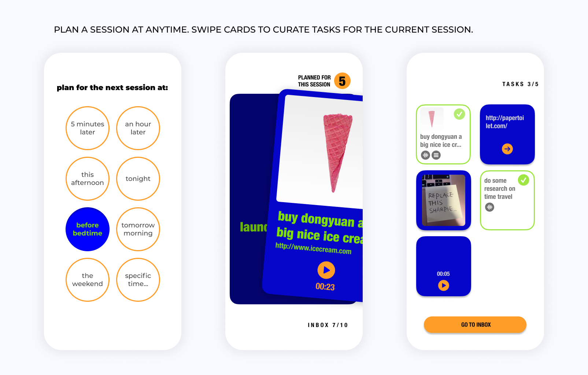

DODO
Swipe cards to curate your present moment
DODO is designed for task management in daily life. While DODO is not made to plan out for huge, complicated and collaborative projects like lauching a rocket, it is ambitiously designed to replace sticky notes and a pencil: DODO helps you intuitively stay organized with minimal effort.
All Tasks are Created Equal
Unlike giant GTD apps, DODO makes all tasks into cards. A card takes inputs in any format : image, voice, URLs or any combination of them, so that users can drop things into the inbox with ease, before any idea slips away from the mind.
Swiping, the Intuition of the Smartphone Era
No more painful dragging from one list to another. At the beginning of each working session, DODO lets you swipe the cards to pick what to work on. Swipe right, the card goes into the current session; swiping left, the card goes back to the inbox, to be swiped again until the next session.
In this way, DODO ensures that every task in the inbox are reviewed in an intuitive way. When done with session planning, DODO shows an overview, where only selected tasks are shown. Less items, more clarity.
Organize Tasks by “Focus Sessions”
The concept of the “focus session” takes on more versatility. A focus session can start at anytime, not any specific o'clock point of time. It can take any format: a 3-hour study session, or a 30-minute gap between the last meeting and the next, or a regular bedtime stretch routine. A focus session can group all kinds of tasks together. Whether it's a combination of different things happen at similar time, like 'baking cookies while writing down an outline for a novel, and if time allows run downstairs to pick up the parcels', or a group of sequential tasks, like a group of ab workout challenges...DODO makes it easy to know what to focus on, and what to do next.